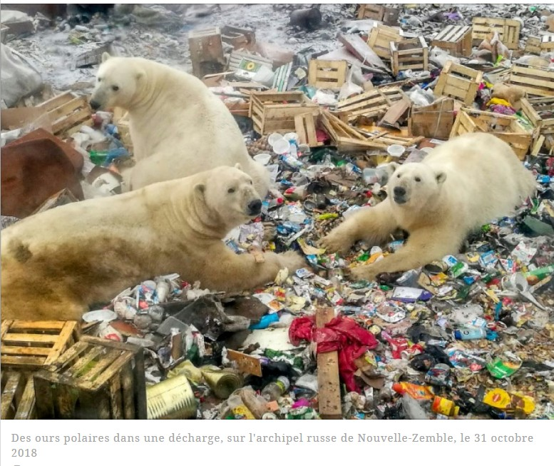

Impact environnemental de l'IA
Consommation d'énergie
L'utilisation de l'intelligence artificielle consomme beaucoup d'énergie.
Cette énergie produit du CO2 qui participe au réchauffement climatique.
- Forte consommation d'électricité
- Émissions de gaz à effet de serre
- Utilisation d'eau pour refroidir les serveurs
Solutions pour une IA plus écologique
Il existe des solutions pour réduire l'impact écologique.
- Utiliser des énergies renouvelables
- Améliorer l'efficacité des serveurs
- Limiter les usages inutiles

dans-l-arctique-russe-les-ours-polaires-menaces-par-une-presence-humaine-accrue_131933.htm
Retour à la page principale